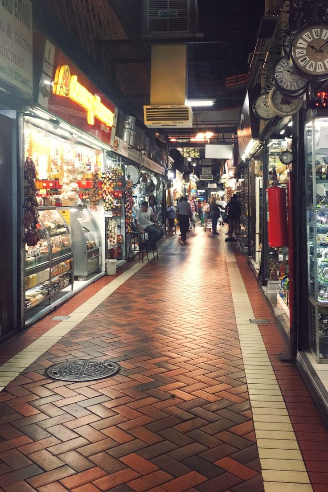

Descubra o Melhor Mercado de Minas Gerais

O Mercado Central de Beagá é o coração pulsante da cidade, onde o cheiro do café fresco se mistura ao aroma de queijos curados e ervas. Em seus corredores coloridos, você encontra desde o artesanato raiz até o famoso fígado com jiló, servido direto no balcão com uma cerveja gelada. É o lugar perfeito para sentir o calor do mineiro, ouvir os causos dos vendedores e entender por que a gente chama esse lugar de nossa segunda casa. Mais que um centro de compras, é uma experiência sensorial completa que traduz toda a hospitalidade e o sabor de Minas Gerais num só bloco.